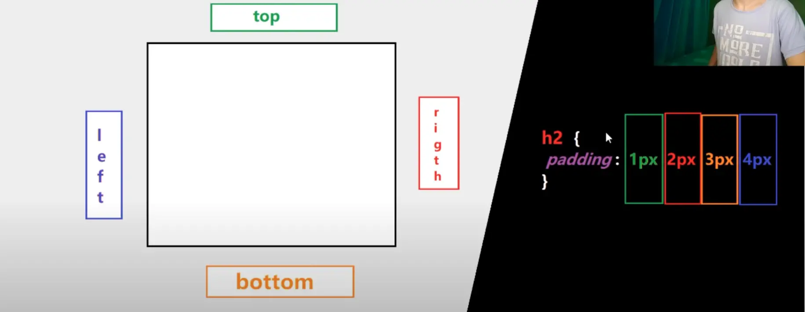
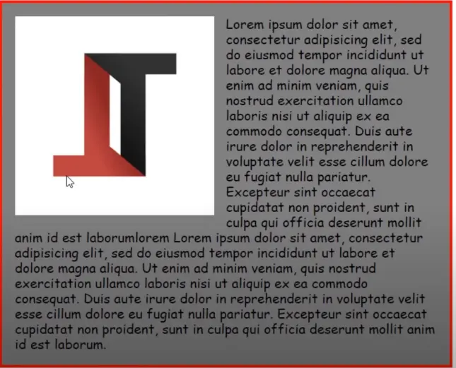

PROPIEDADES DE CAJAS
Las propiedades mas importantes de una caja son line.height, padding, border y margin.
Height y Width: el alto y ancho de la caja.
Padding: este es el espacio que hay entre la letra y la caja, se puede poner padding (solo), padding-top, padding-right, padding-left y padding-bottom, este van acompañadas de una unidad. En esta imagen esta mas claro:

Border: es el borde, se pone border: medida estilo color. Por ejemplo: border: 10px solid blue. Hay muchos estilos, entre ellos estan: Solid (solido), dashed (rayas), double (dos lineas fina de borde), groove, inset, outset, ridge, etc. El mas usado es Solid.
Border-radius: es el borde redondeado de una caja.
Outline: lo mismo que border pero no ocupa un ligar real por asi decirlo.
Margin: es la distancia entre las cajas. Tambien existe left, right, bottom y top. Con margin:auto se centra la caja.
Box-sizing: border-box: este hace que se respete la regla del height y width, y no del padding ni del border.
Box-sizing: content-box: hace que lo que dice el height y el width es lo que medirá la caja sin el border, pero si le aplicamos un border, la caja medirá más. Por ej: le ponemos un height y width de 100px, la caja medirá 100x100px, pero si le metemos un border de 10px, tambien la caja medirá 100x100px, pero si le ponemos un box-sizing:content-box esta medirá 110x110px.
Box-shadow: Es la sombra, se usa box-shadow: ejex ejey tamañodeldesenfoque borde color. Por ejemplo: box-shadow: 2px 5px 10px 0 red
text-shadow: Lo mismo que box-shadow exepto el borde.
POSITION:
Position:relative: desbloquea 4 propiedades nuevas; top, left, bottom, right y z-index. Estas menos la última son para mover la caja. Y tambien conserva su espasio anterior, osea que cuando le ponemos a una caja top:30px esta se moverá hacia abajo 30px pero reservará su posicion anterior. Top y left tienen la prieridad, son como las que ma valor tienen.
Z-index: este se desbloquea por el position-relative, lo que hace es aplicarle un valor a una caja, la caja que tenga mas valor estará por encima de las de mes valor. Por ejemplo si una caja llamada caja1 le pones 20 de valor de z-index, y a otra le pones 19, la caja1 estará y se verá por encima de la otra.
Position:absolute: es lo mismo que relative exepto que no reserva su lugar o espacio anterior. Por ej: si hay una caja arriba de otra, y la caja de arriba le pones un position-absolute y left 30px, esto lo que hará es mover la caja que estaba abajo a arriba (ya que no reserva ningun lugar) y mover la caja que estaba arriba a la derecha 30px. Si queres que una caja dentro de otra caja grande se mueva al extremo inferior izquierdo de la caja grande, le pones bottom:0, si la quieres al extremo derecho de la caja grande right:0 y asi con las demas, pero si la quieres en el extremo inferior derecho como su posicion por defecto va a ser en el extremo superior izquierdo de la caja le tienes que poner bottom:0 y right:0. Y si la quieres centrar tienes que poner top:0, right:0, left:0, bottom:0 y margin:auto.
Position:fixed: hace que cuando mueves el scroll osea la ruedita del mouse, el texto o caja que tenemos establecido con fixed se fija en un mismo lugar siempre. Y no ucupa espacio en la pantalla, osea que no reserva su espacio anterior ni el actual.
Position:sticky: es una fucion entre position-relative y fixed. Ya que hace la misma funcion que fixed y la misma que position relative, es decir que tiene top,bottom, etc y ocupa un espacio. La unica diferencia es que cuando el scroll pasa donde se sitúa empieza a comportarse como un fixed.
Overflow: esto sirve cuando el contenido sobrepasa su respectiva caja, hay "overflow:auto" detecta cuando sobre pasa el texto de la caja y pone un scroll, tambien está "overflow:scroll" esto pone un scroll aunque no sobrepase el texto de la caja. En una imagen no se puede salir de su respectiva caja, exepto que le pongas position relative, con esto se puede crear un efecto visual muy bueno; con "position:relative" (mueve a la imagen de su caja, con top,left,etc) y "overflow:hidden" (hace que esta imagen se vea por debajo de la pagina cuando no esta en su respectiva caja, es decir se hace invisible).
Float: es parecido a inline-block, se usa cuando queremos hacer lo mismo que en inline-block pero con un titulo(h1), esto quedo en la vieja escuela y no vale la pena usarlo, ya que tendremos un monton de errores con esto. Ahora se usa más Flex y Grid. Un uso muy útil que le podemos dar al float es poniendo "float:left" o right en una imagen dentro de una caja con texto y asi crearíamos este efecto esto es cuando queres que poner una imagen dentro de un contenedor (caja) que tiene texto, esto lo que haria es poner la imagen dentro del contenedor apartando al texto que estaba alli a un lado.